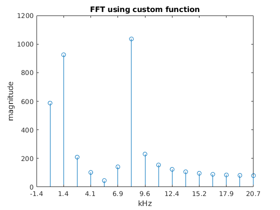

Contents
FFT algoritm
clear; % clears all previus values from memory clc; % clear command window fs = 44100; % samplinf freq. fftLength=32; % windowlength % signal frequencies data_length = 8; % data length in FPGA calculations max = 2^(data_length-1) - 1 ; % max aplitude 2^n /2 f1 = 1000; a1 = max/2; f2 = 0; a2 = max/4; f3 = 8000; a3 = max/2; % calculating signals comp1 = a1 * cos(2*pi*f1*[0:1/fs:1]); comp2 = a2 * cos(2*pi*f2*[0:1/fs:1]); comp3 = a3 * cos(2*pi*f3*[0:1/fs:1]); % calculatin vector values for step function d1 = ones(1, 24); d2 = 0.*ones(1, 1000 ); %data = [ d1 , d2]; % creates vector with step function data = comp1 + comp2 + comp3; % creates vector from 3 sin functions figure(1) % plots separete sin functions plot ( comp1, '-'); hold on; plot ( comp2, '-'); plot ( comp3, '-'); xlim([1 50]) title('Separete SIN functions') ylabel('magnitude'), xlabel('time') hold off; figure(2) % plots signal for fft plot ( data); title('Signal for FFT analysis FFT') ylabel('magnitude'), xlabel('time') xlim([1 100]) figure(3) % plots resultinf fft from Matlab functions ft =fft(data,fftLength); ftMag=abs(ft(1:fftLength/2)); stem (ftMag) title('Linear Magnitude FFT') ylabel('magnitude'), xlabel('kHz') xt = xticks; % returns the current x-axis tick values as a vector fstep = fs/fftLength; % tick of f axis in f domain xtnew = round((xt-1)*fstep/1000, 1) ; % calculate new tick in kHz xticklabels(xtnew) % set new tick labels % figure(4) % plots resultinf fft(in dB) from Matlab functions % ft =fft(data,fftLength); % ftMag=abs(ft(1:fftLength/2)); % plot (20*log10(ftMag)) % title('dB Magnitude') % ylabel('dB'), xlabel('kHz') % % xt = xticks; % returns the current x-axis tick values as a vector % fstep = fs/fftLength; % tick of f axis in f domain % xtnew = round((xt-1)*fstep/1000, 1) ; % calculate new tick in kHz % xticklabels(xtnew) % set new tick labels
Data preparation for FFT
% reverse bit calulation bits = length(dec2bin( fftLength - 1 )); % how many bits in binary number rev_bit_dec = zeros(1,fftLength); % create vektor size of fftlength for n=1:fftLength bin_num = dec2bin(n-1 , bits); % converting to binary number rev_bit = []; % create empty vector for k=bits:-1:1 rev_bit = [rev_bit , bin_num(k)]; end rev_bit_dec(n) = bin2dec(rev_bit) ; % add 1 to match Matlab numbering end % creating array % create empty array to store values in reverse bit order stage = zeros(bits + 1,fftLength); for n=1:fftLength stage(1,n) = data(rev_bit_dec(n)+1); end % Calculating W twiddling factor for all stages for n = 1 : fftLength/2 W(n) = exp(-1i * (n-1) * 2 * pi/ fftLength ); end % convert to fixed point mumber -> sfi(v,w,f) returns a signed fixed-point object with value v, word length w, and fraction length f. Wr = sfi(real(W),data_length,data_length-2); Wi = sfi(imag(W),data_length,data_length-2); st_real = sfi(real(stage) , data_length + 3 , 0); st_imag = sfi(imag(stage) , data_length + 3 , 0); % temp values for multiplaying with W twiddling factor st_real_tmp = sfi(real(zeros(bits + 1,fftLength)) , data_length + 3 , 0); st_imag_tmp = sfi(imag(zeros(bits + 1,fftLength)) , data_length + 3 , 0);
First stage
for n = 1 : 2^1 : fftLength % Even stage(2,n) = stage(1,n) + stage(1,n+1); % Odd stage(2,n+1) = stage(1,n) - stage(1,n+1); end % calculations using separate real and imaginary numbers for n = 1 : 2^1 : fftLength % Even st_real(2,n) = st_real(1,n) + st_real(1,n+1); % imag is 0 % Odd st_real(2,n+1) = st_real(1,n) - st_real(1,n+1); % imag is 0 end
Second stage
% Calculating W twiddling factor for n = 1 : 2 Wn(n) = exp(-1i * (n-1) * 2 * pi/ 4 ); end % calculate next stage values for n = 1 : 2^2 : fftLength % Even pair stage(3,n+0) = stage(2,n+0) + Wn(1)*stage(2,n+2); stage(3,n+1) = stage(2,n+1) + Wn(2)*stage(2,n+3); % Odd par stage(3,n+2) = stage(2,n+0) - Wn(1)*stage(2,n+2); stage(3,n+3) = stage(2,n+1) - Wn(2)*stage(2,n+3); end % calculations using separate real and imaginary numbers for n = 1 : 2^2 : fftLength % Even pair st_real(3,n+0) = st_real(2,n+0) + st_real(2,n+2); % imag is 0 st_real(3,n+1) = st_real(2,n+1) ; % real is 0 st_imag(3,n+1) = -1 * st_real(2,n+3); % mult -j % Odd par st_real(3,n+2) = st_real(2,n+0) - st_real(2,n+2); % imag is 0 st_real(3,n+3) = st_real(2,n+1) ; % real is 0 st_imag(3,n+3) = st_real(2,n+3); % mult -j end
Therd stage
% Calculating W twiddling factor for n = 1 : 4 Wn(n) = exp(-1i * (n-1) * 2 * pi/ 8 ); end % calculate next stage values for n = 1 : 2^3 : fftLength for k = 0 : 3 % Even pair stage(4,n+k) = stage(3,n+k) + Wn(k+1)*stage(3,n+k+4); % Odd par stage(4,n+k+4) = stage(3,n+k) - Wn(k+1)*stage(3,n+k+4); end end % calculations using separate real and imaginary numbers for n = 1 : 2^3 : fftLength for k = 0 : 3 st_real_tmp(3,n+k+4) = ( Wr(k*4+1) * st_real(3,n+k+4) ) - ( Wi(k*4+1) * st_imag(3,n+k+4) ); st_imag_tmp(3,n+k+4) = ( Wi(k*4+1) * st_real(3,n+k+4) ) + ( Wr(k*4+1) * st_imag(3,n+k+4) ); end end for n = 1 : 2^3 : fftLength for k = 0 : 3 % Even pair st_real(4,n+k) = st_real(3,n+k) + st_real_tmp(3,n+k+4); st_imag(4,n+k) = st_imag(3,n+k) + st_imag_tmp(3,n+k+4); % Odd par st_real(4,n+k+4) = st_real(3,n+k) - st_real_tmp(3,n+k+4); st_imag(4,n+k+4) = st_imag(3,n+k) - st_imag_tmp(3,n+k+4); end end
4th stage
% Calculating W twiddling factor for n = 1 : 8 Wn(n) = exp(-1i * (n-1) * 2 * pi/ 16 ); end % calculate next stage values for n = 1 : 2^4 : fftLength for k = 0 : 7 % Even pair stage(5,n+k) = stage(4,n+k) + Wn(k+1)*stage(4,n+k+8); % Odd par stage(5,n+k+8) = stage(4,n+k) - Wn(k+1)*stage(4,n+k+8); end end % calculations using separate real and imaginary numbers for n = 1 : 2^4 : fftLength for k = 0 : 7 st_real_tmp(4,n+k+8) = ( Wr(k*2+1) * st_real(4,n+k+8) ) - ( Wi(k*2+1) * st_imag(4,n+k+8) ); st_imag_tmp(4,n+k+8) = ( Wi(k*2+1) * st_real(4,n+k+8) ) + ( Wr(k*2+1) * st_imag(4,n+k+8) ); end end for n = 1 : 2^4 : fftLength for k = 0 : 7 % Even pair st_real(5,n+k) = st_real(4,n+k) + st_real_tmp(4,n+k+8); st_imag(5,n+k) = st_imag(4,n+k) + st_imag_tmp(4,n+k+8); % Odd par st_real(5,n+k+8) = st_real(4,n+k) - st_real_tmp(4,n+k+8); st_imag(5,n+k+8) = st_imag(4,n+k) - st_imag_tmp(4,n+k+8); end end
5th stage
% Calculating W twiddling factor for n = 1 : 16 Wn(n) = exp(-1i * (n-1) * 2 * pi/ 32 ); end % calculate next stage values for n = 1 : 2^5 : fftLength for k = 0 : 15 % Even pair stage(6,n+k) = stage(5,n+k) + Wn(k+1)*stage(5,n+k+16); % Odd par stage(6,n+k+16) = stage(5,n+k) - Wn(k+1)*stage(5,n+k+16); end end % calculations using separate real and imaginary numbers for n = 1 : 2^5 : fftLength for k = 0 : 15 st_real_tmp(5,n+k+16) = ( Wr(k*1+1) * st_real(5,n+k+16) ) - ( Wi(k*1+1) * st_imag(5,n+k+16) ); st_imag_tmp(5,n+k+16) = ( Wi(k*1+1) * st_real(5,n+k+16) ) + ( Wr(k*1+1) * st_imag(5,n+k+16) ); end end for n = 1 : 2^5 : fftLength for k = 0 : 15 % Even pair st_real(6,n+k) = st_real(5,n+k) + st_real_tmp(5,n+k+16); st_imag(6,n+k) = st_imag(5,n+k) + st_imag_tmp(5,n+k+16); % Odd par st_real(6,n+k+16) = st_real(5,n+k) - st_real_tmp(5,n+k+16); st_imag(6,n+k+16) = st_imag(5,n+k) - st_imag_tmp(5,n+k+16); end end
Ploting out
slowly plot result
figure(5) for n = 1 : bits +1 %plot( abs( real_n(i, :) + j.*imag_n(i, :) ) ); stem( abs( stage(n,1:fftLength/2) ) ); % pause(1); end xt = xticks; % returns the current x-axis tick values as a vector fstep = fs/fftLength; % tick of f axis in f domain xtnew = round((xt-1)*fstep/1000, 1) ; % calculate new tick in kHz xticklabels(xtnew) % set new tick labels title('FFT using custom function') ylabel('magnitude'), xlabel('kHz') figure(6) for n = 1 : bits +1 %plot( abs( real_n(i, :) + j.*imag_n(i, :) ) ); temp = st_real + 1i * st_imag; stem( abs( temp(n,1:fftLength/2) ) ); % pause(1); end xt = xticks; % returns the current x-axis tick values as a vector fstep = fs/fftLength; % tick of f axis in f domain xtnew = round((xt-1)*fstep/1000, 1) ; % calculate new tick in kHz xticklabels(xtnew) % set new tick labels title('FFT using custom function real/imag separate') ylabel('magnitude'), xlabel('kHz') figure(7) dif2 = 100* abs(temp(bits +1,1:fftLength/2) - ft(1:fftLength/2))./abs(ft(1:fftLength/2)) ; plot(dif2, 'blue') title('Difference in calculations') xt = xticks; % returns the current x-axis tick values as a vector fstep = fs/fftLength; % tick of f axis in f domain xtnew = round((xt-1)*fstep/1000, 1) ; % calculate new tick in kHz xticklabels(xtnew) % set new tick labels ylabel('percents, %'), xlabel('kHz')